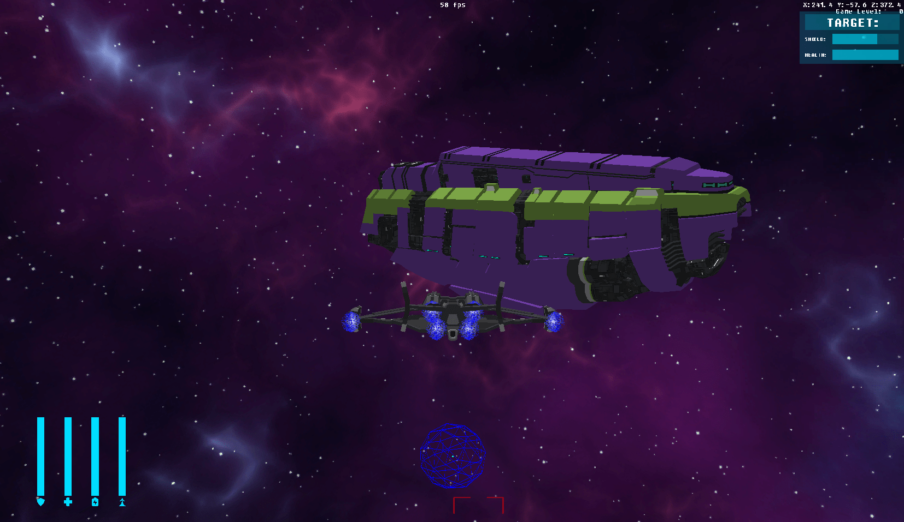

_ __ _ __ _____
| | / /___ (_)___/ / / ___/_________ __ _____ ____ ____ ____ _____
| | / / __ \/ / __ / \__ \/ ___/ __ `/ | / / _ \/ __ \/ __ `/ _ \/ ___/
| |/ / /_/ / / /_/ / ___/ / /__/ /_/ /| |/ / __/ / / / /_/ / __/ /
|___/\____/_/\__,_/ /____/\___/\__,_/ |___/\___/_/ /_/\__, /\___/_/
/____/
Void Scavenger is a rogue-like dogfighting and first-person-shooter inspired by many popular games such as Star Wars ™️ Squadrons and Doom ™️. The game takes the player through intense firefights and fun, yet challenging, flights through the stars on their path to upgrade their ship and fend off enemies and aliens for as long as possible.
